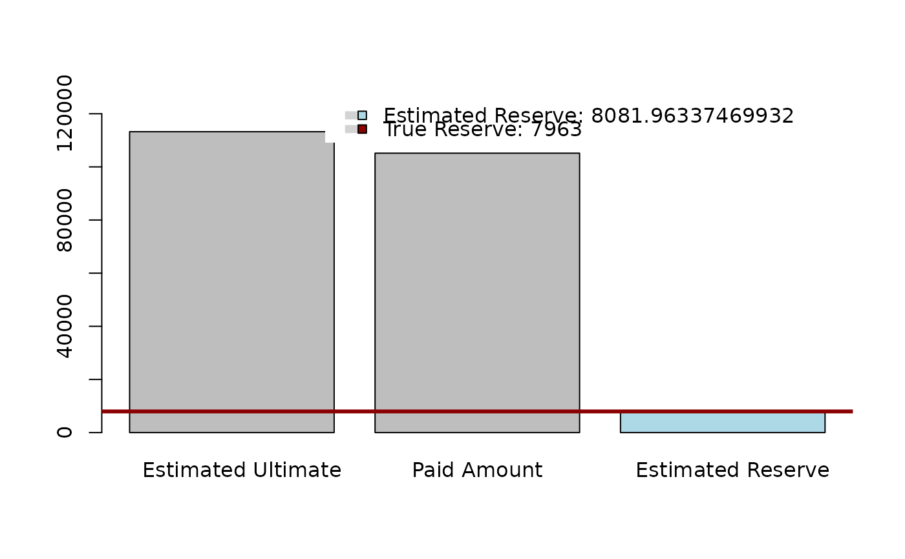
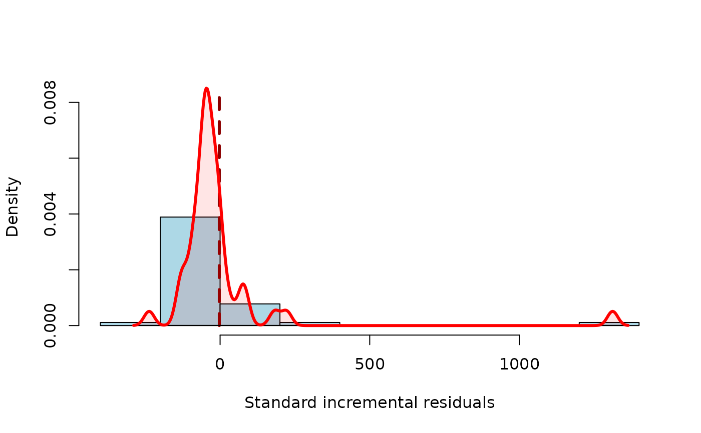
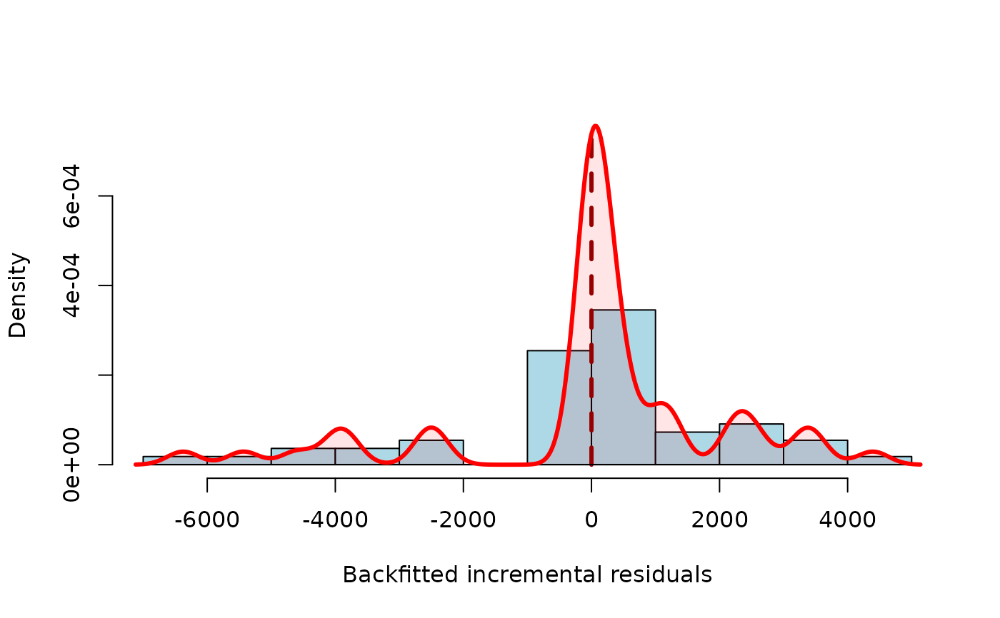

Summary Method for Objects of the S3 Class Method profileLadder
summary.profileLadder.RdThe function provides an overall summary of the output from the functions
parallelReserve() and mcReserve() (summary of the object of the class
profileLadder)
Usage
# S3 method for class 'profileLadder'
summary(object, plotOption = FALSE, ...)Arguments
- object
an object of the class
profileLadder– i.e., either a run-off triangle itself or the output form theparallelReserve()ormcReserve()functions- plotOption
logical to indicate whether a graphical output should be also provided (set by DEFAULT to
FALSE). If the incremental residuals (standard or back-fitted) are provided within the objectxthe plot provides a summary of the residuals (otherwise a simple barplot summarizing the estimated reserve is given)- ...
not used
Value
Summary of the completed functional profiles and the estimated reserve
(provided by the function parallelReserve() or mcReserve()).
Summary of the incremental residuals (standard or backfitted) is also provided
if the residuals are available. The output is a list with the following items:
- origins
a matrix with the row-specific summary of the completed functional profiles (except the first fully developed profile—i.e., the first row in the run-off triangle). The first column of the matrix (
First) gives the first origin payments; The second column (Latest) gives the last available (cumulative) payments (i.e., values from the last running diagonal in the run-off triangle); The third column (Dev.To.Date) gives a relative proportion of the paid amount (Latest) with respect to the estimated ultimate (Ultimate) given in the fourth column; Finally, the last column (IBNR) gives the estimated amount still left to pay (Incurred But Not Reported)- overall
Table with the summary of the true/estimated reserve:
Paid amountrepresents the sum of the last running diagonal;Estimated reservegives the reserve estimate provided by one of the estimation algorithm (PARALLAX, REACT, or MACRAME);True reserveis given as a sum of the last column (if available,NAotherwise); Finally, some Accuracy in terms ofReserve%is given as a percentage of the estimated reserve with respect to the true reserve (see Maciak, Mizera, and Pešta (2022) andDev.To.Dategives the proportion of the overall estimatd ultimate and the overall paid amount- resids
Table with basic empirical description characteristics of the residuals (standard or back-fitted) if the residuals are provided in
x
Examples
data(CameronMutual)
summary(CameronMutual)
#> 1 2 3 4 5
#> Min. :3689 Min. : 6043 Min. : 6789 Min. : 7089 Min. : 7164
#> 1st Qu.:5066 1st Qu.: 8055 1st Qu.: 8978 1st Qu.: 9402 1st Qu.: 9776
#> Median :5186 Median : 8590 Median : 9551 Median :10189 Median :10618
#> Mean :5448 Mean : 8866 Mean :10105 Mean :10669 Mean :11009
#> 3rd Qu.:5926 3rd Qu.: 9761 3rd Qu.:11500 3rd Qu.:12098 3rd Qu.:12507
#> Max. :7452 Max. :12421 Max. :14171 Max. :14752 Max. :15066
#> 6 7 8 9
#> Min. : 7197 Min. : 7253 Min. : 7267 Min. : 7266
#> 1st Qu.: 9854 1st Qu.: 9908 1st Qu.: 9959 1st Qu.: 9908
#> Median :10724 Median :10758 Median :10792 Median :10792
#> Mean :11158 Mean :11241 Mean :11289 Mean :11294
#> 3rd Qu.:12702 3rd Qu.:12806 3rd Qu.:12882 3rd Qu.:12888
#> Max. :15354 Max. :15637 Max. :15720 Max. :15744
#> 10
#> Min. : 7266
#> 1st Qu.: 9907
#> Median :10803
#> Mean :11312
#> 3rd Qu.:12890
#> Max. :15786
## standard summary output
summary(mcReserve(CameronMutual))
#> MACRAME reserve prediction (by origins)
#> First Latest Dev.To.Date Ultimate IBNR
#> 2 5984 13113 0.9964286 13160.000 47.00000
#> 3 7452 15720 0.9950067 15798.889 78.88889
#> 4 7115 13872 0.9906724 14002.611 130.61111
#> 5 5753 11282 0.9840866 11464.438 182.43827
#> 6 3937 8757 0.9749940 8981.594 224.59362
#> 7 5127 9325 0.9535135 9779.620 454.61986
#> 8 5046 8984 0.8241040 10901.537 1917.53724
#> 9 5129 8202 0.7664369 10701.468 2499.46806
#> 10 3689 3689 0.5915835 6235.806 2546.80632
#> total 49232 92944 0.9200011 101025.963 8081.96337
#>
#> Overall reserve summary
#> Est.Reserve Est.Ultimate Paid Amount True Reserve Reserve%
#> 8081.96 113240.96 105159.00 7963.00 1.49
#>
## summary output with plotOption = TRUE
summary(mcReserve(CameronMutual), plotOption = TRUE)
#> MACRAME reserve prediction (by origins)
#> First Latest Dev.To.Date Ultimate IBNR
#> 2 5984 13113 0.9964286 13160.000 47.00000
#> 3 7452 15720 0.9950067 15798.889 78.88889
#> 4 7115 13872 0.9906724 14002.611 130.61111
#> 5 5753 11282 0.9840866 11464.438 182.43827
#> 6 3937 8757 0.9749940 8981.594 224.59362
#> 7 5127 9325 0.9535135 9779.620 454.61986
#> 8 5046 8984 0.8241040 10901.537 1917.53724
#> 9 5129 8202 0.7664369 10701.468 2499.46806
#> 10 3689 3689 0.5915835 6235.806 2546.80632
#> total 49232 92944 0.9200011 101025.963 8081.96337
#>
#> Overall reserve summary
#> Est.Reserve Est.Ultimate Paid Amount True Reserve Reserve%
#> 8081.96 113240.96 105159.00 7963.00 1.49
#>

## summary output with (standard) residuals and plotOption = TRUE
summary(mcReserve(CameronMutual, residuals = TRUE), plotOption = TRUE)
#> MACRAME reserve prediction (by origins)
#> First Latest Dev.To.Date Ultimate IBNR
#> 2 5984 13113 0.9964286 13160.000 47.00000
#> 3 7452 15720 0.9950067 15798.889 78.88889
#> 4 7115 13872 0.9906724 14002.611 130.61111
#> 5 5753 11282 0.9840866 11464.438 182.43827
#> 6 3937 8757 0.9749940 8981.594 224.59362
#> 7 5127 9325 0.9535135 9779.620 454.61986
#> 8 5046 8984 0.8241040 10901.537 1917.53724
#> 9 5129 8202 0.7664369 10701.468 2499.46806
#> 10 3689 3689 0.5915835 6235.806 2546.80632
#> total 49232 92944 0.9200011 101025.963 8081.96337
#>
#> Overall reserve summary
#> Est.Reserve Est.Ultimate Paid Amount True Reserve Reserve%
#> 8081.96 113240.96 105159.00 7963.00 1.49
#>
#> Residual summary (standard incremental residuals)
#> Min 1st Q. Median Mean 3rd Q. Max Std.Er.
#> -237 -63 -44 -3 -8 1312 215
#>
#> Total number of residuals: 45, Total number of unique residuals: 45
#> Suspicious residuals (using 2σ rule): 1, Outliers (3σ rule): 1

## summary output with (back-fitted) residuals and plotOption = TRUE
summary(mcReserve(observed(CameronMutual), residuals = TRUE), plotOption = TRUE)
#> MACRAME reserve prediction (by origins)
#> First Latest Dev.To.Date Ultimate IBNR
#> 2 5984 13113 0.9964286 13160.000 47.00000
#> 3 7452 15720 0.9950067 15798.889 78.88889
#> 4 7115 13872 0.9906724 14002.611 130.61111
#> 5 5753 11282 0.9840866 11464.438 182.43827
#> 6 3937 8757 0.9749940 8981.594 224.59362
#> 7 5127 9325 0.9535135 9779.620 454.61986
#> 8 5046 8984 0.8241040 10901.537 1917.53724
#> 9 5129 8202 0.7664369 10701.468 2499.46806
#> 10 3689 3689 0.5915835 6235.806 2546.80632
#> total 49232 92944 0.9200011 101025.963 8081.96337
#>
#> Overall reserve summary
#> Est.Reserve Est.Ultimate Paid Amount True Reserve Reserve%
#> 8081.96 113240.96 105159.00 NA NA
#>
#> Residual summary (backfitted incremental residuals)
#> Min 1st Q. Median Mean 3rd Q. Max Std.Er.
#> -6375 -51 113 0 771 4394 2135
#>
#> Total number of residuals: 55, Total number of unique residuals: 55
#> Suspicious residuals (using 2σ rule): 4, Outliers (3σ rule): 0
